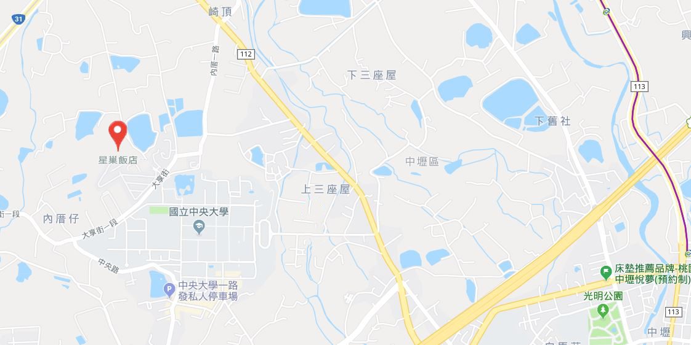

交通資訊
國道1號
中壢交流道（62公里）出口，往新屋方向行駛，沿民族路至三民路右轉，中正路左轉，中大路左轉即可抵達本校前門。車程約5~10分鐘。
國道3號
大溪交流道（62公里）出口，往中壢方向行駛，轉台66線快速公路（往中壢、觀音方向），接國道1號（北上），於62公里中壢交流道出口，往新屋方向行駛，沿民族路至三民路右轉，中正路左轉，中大路左轉即可抵達本校前門。車程約20分鐘。
大眾交通工具
市區公車132、133、172路線行駛於中壢市區及中央大學之間，車行約20~30分鐘；部分班次繞經高鐵桃園站。校園站牌：前門警衛室、志希館、依仁堂、後門、觀景台。付費方式：現金投幣或使用悠遊卡、台灣通（上下車均需過卡感應）。一段票，全票18元、半票9元。
